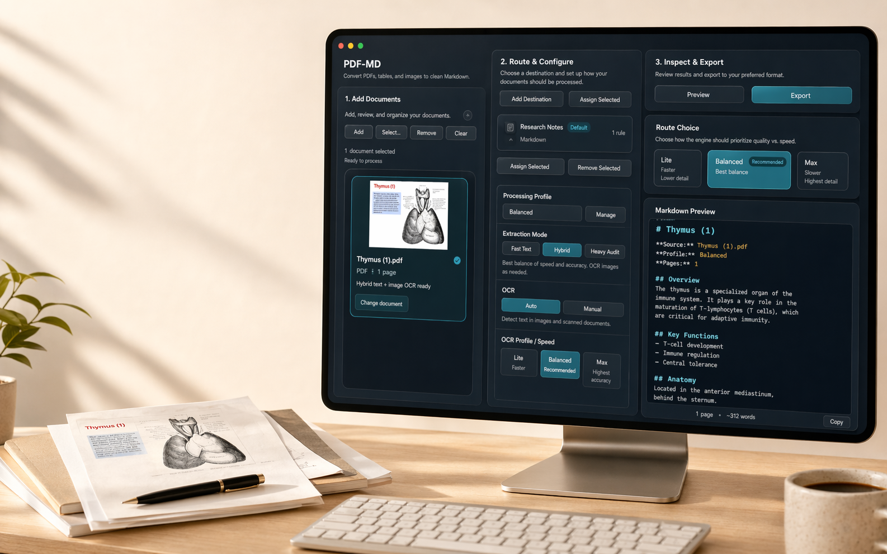
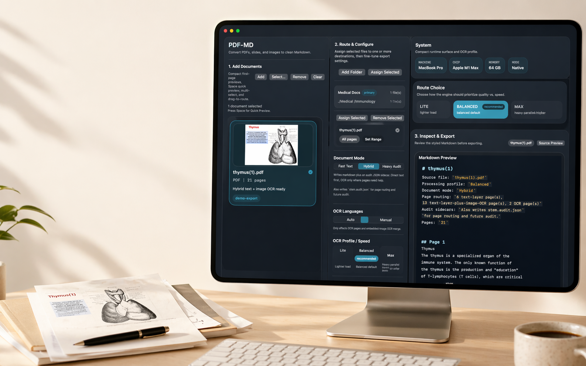
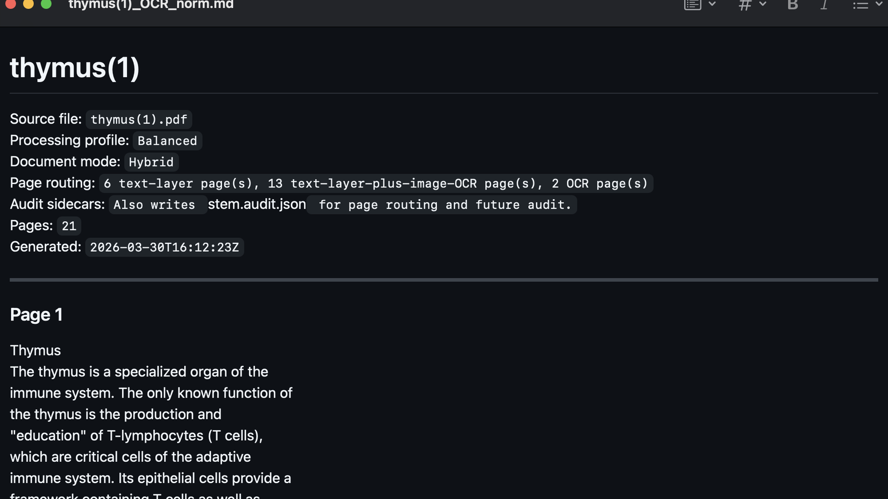
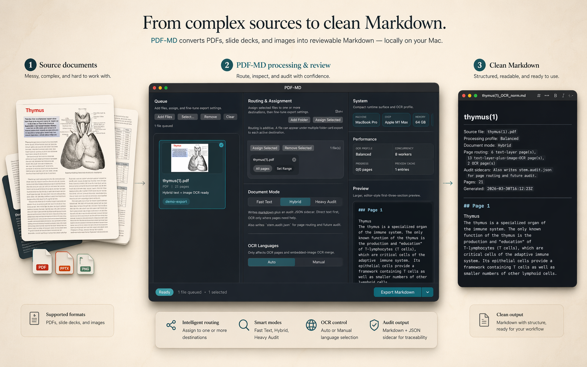
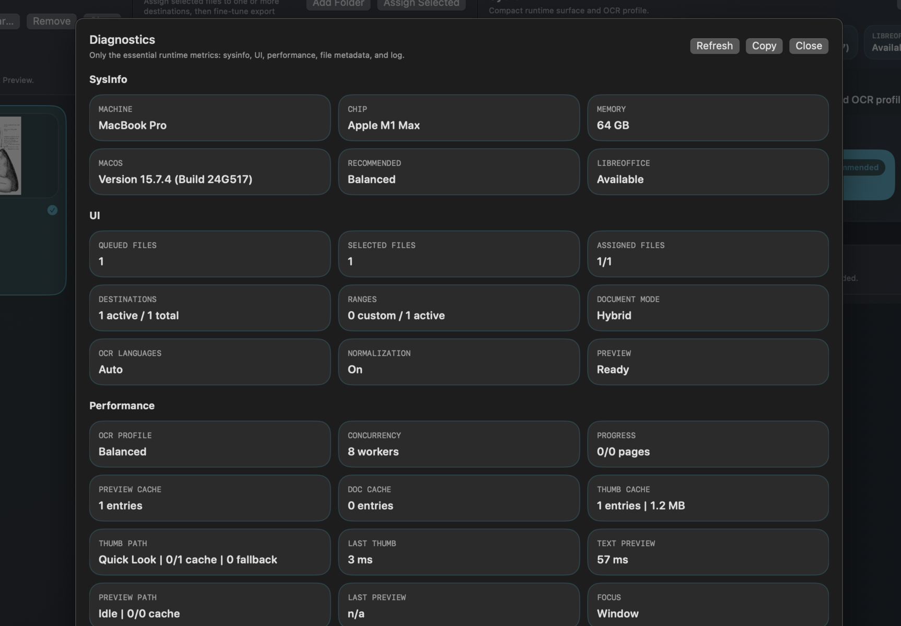
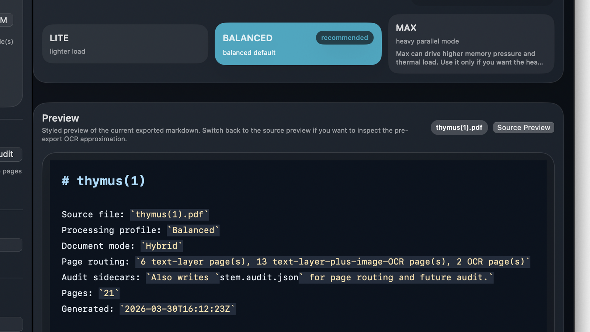
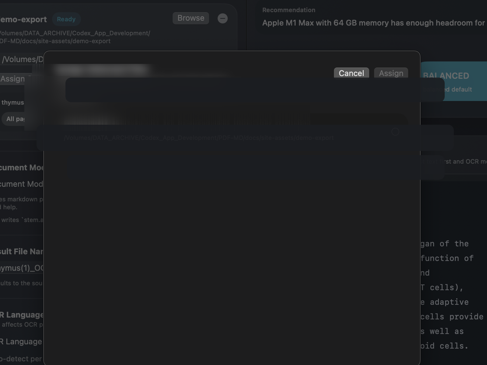

Inputs it handles
PDFs, PowerPoint-family presentation files, and image inputs are handled inside one app, with the same routing and preview workflow.
Native Mac Markdown tool
Route files, choose Fast Text, Hybrid, or Heavy Audit, preview the Markdown, and keep audit sidecars when accuracy matters.

What
PDF-MD is built for documents that break normal copy and paste workflows: difficult PDFs, exported slide decks, image-based material, and mixed-content files that are awkward to reuse.
It is not a generic "convert file" wrapper. It is a document workbench for inspecting source pages, choosing page ranges, assigning one file to more than one destination, and exporting either practical markdown or full audit artifacts when you need to inspect what happened page by page.
PDFs, PowerPoint-family presentation files, and image inputs are handled inside one app, with the same routing and preview workflow.
Fast Text, Hybrid, and Heavy Audit give you a usable quick pass, a stronger mixed-text export, or a traceable audit-heavy export.
The target is not "any text at all." The target is markdown that is readable enough to keep using once the export is finished.
Why
Many source files technically contain text, but not in a form that becomes good working Markdown. PDF-MD exists to close that gap.
Real course material mixes text layers, raster figures, scanned labels, and slide-style layouts. One extraction path is not enough.
If the same document set needs to be exported again, routed to two destinations, reviewed, or audited, the app should make that repeat work reliable instead of manual.
The app keeps inspection, export, diagnostics, and markdown review in one local workflow rather than sending the user into a browser upload cycle for every file.
The goal is to get to a durable format that can be versioned, searched, quoted, edited, and fed into later synthesis work without being trapped inside the source format.
When a page looks wrong, you need to see what the app saw, which route it chose, and what OCR boxes were present. Heavy Audit exists for exactly that reason.
Advantage
Typical online converters are optimized for a short upload-convert-download loop. They often treat the whole file as one job, give little visibility into route choice, and stop at a one-shot text dump or a generic OCR pass.
PDF-MD is built around document control, not just document conversion: page-range routing, per-file destination assignment, in-app preview, repeat export, diagnostics, and full audit sidecars when a difficult file needs to be inspected deeply.
The working loop happens in a macOS app on your machine, which is a different operating model from shipping files to a browser service and hoping the result is good enough.
PDF-MD can use direct text extraction where a page is readable and switch into OCR where a page, region, or embedded raster actually needs it.
PDF-MD does not treat OCR as a single serial pass. It schedules page work across selectable parallel profiles so larger jobs can move faster without forcing the same load on every machine.
One file can be routed to one or more destinations, limited to selected ranges, and exported again without rebuilding the job from scratch.
The app has a diagnostics surface, preview surfaces, and Heavy Audit sidecars so the export can be reviewed instead of trusted blindly.
Hybrid is for practical markdown. Heavy Audit is for cases where you also want JSON, HTML, rendered page assets, and OCR observations.
The app was shaped against real endocrine course PDFs and slide exports, not only synthetic happy-path samples.



How
The example below uses the first page of thymus(1).pdf:
from the original source page, through PDF-MD preview and export, to the
final markdown file. Under the hood, the app inspects the document,
decides whether the text layer is trustworthy, merges OCR when pages are
image-heavy, runs OCR work through a controlled parallel scheduler, and
normalizes the output for readable markdown when that cleanup improves
the result.

Preview the source page, check the queue, and confirm which file or page range should actually be processed.
Send one file to one folder or many, and restrict the route to the sections that matter instead of exporting the whole source by default.
Fast Text favors direct text layers, Hybrid blends direct extraction with OCR, and Heavy Audit keeps the richer inspection artifacts alongside the markdown. The OCR lane can then run in Lite, Balanced, or Max profiles so throughput can scale without hiding the cost of heavier parallelism.
Review the exported markdown inside the app and rerun if needed, instead of discovering problems only after the file has already moved downstream.
Proof
PDF-MD is built around visible decisions. You can inspect the source, see which files are routed where, choose an extraction mode, and review the Markdown before relying on it downstream.
When a document is too messy for a quick pass, Heavy Audit keeps sidecars with JSON, HTML, rendered page assets, and OCR observations so a difficult export can be inspected instead of trusted blindly.
Use direct text extraction when the document already has a useful text layer and you want a quick Markdown pass.
Combine direct extraction with OCR where pages, figures, or embedded image regions need help.
Export Markdown plus audit artifacts when accuracy and inspection matter more than a lightweight one-file result.
Need the evidence behind the claim?
Open the proof overview for retained corpus evidence, benchmark logic, app-surface coverage, and the exact commercial sweep boundaries behind the public claims.
Technical Specifications

Page Inspection
Open a full-page preview to verify the source before export.

Range Control
Limit export to the relevant page range instead of processing the entire document.

Post-Export Review
Review the generated markdown in the app immediately after export.

Diagnostics
Inspect queue state, route mix, cache state, selected processing profile, and export diagnostics when a file needs deeper review.

Heavy Audit
Keep markdown plus audit JSON, HTML, rendered page assets, and OCR observations for difficult exports.

Multi-Destination Routing
Send one source file to multiple destinations and keep different route ranges per destination.
Buy
Personal License
HKD138
One-time purchase
Questions about checkout, licensing, receipt access, or activation? Email worldpresident1030@gmail.com.
Built for documents that do not convert cleanly, including PDFs with embedded images, presentation files, and image-based source material. Review Privacy, Terms, and EULA before purchase to see how data, sale, and license use are handled.